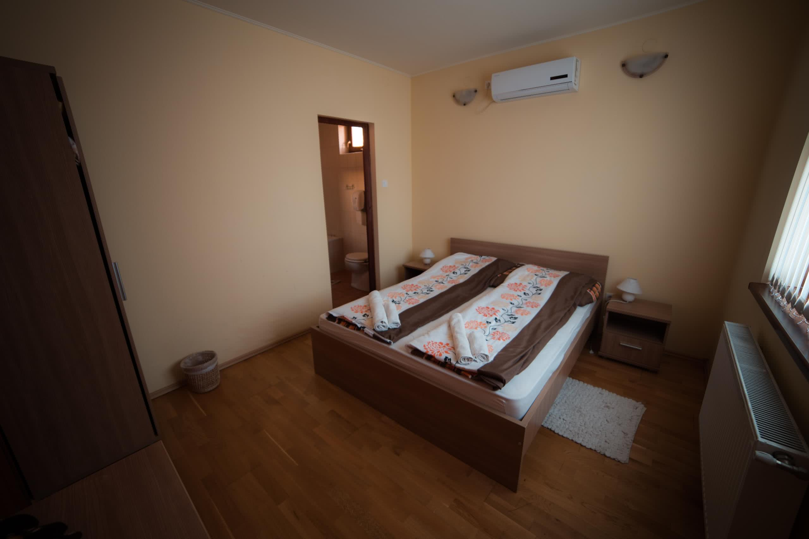

Szeretettel üdvözöljük a
Bíbic vendégházak
honlapján!
Hegedüs Péter
Bíbic Vendégházak házigazdája
Hegedüsné Kóró Ágnes
Fauna ház tulajdonosa
Gombkötő Gábor
Flóra ház tulajdonosa
A nagybajomi panzió, illetve vendégház tervét családi ötletelés - Hegedüs Péter és Gombkötő Gábor, testvérek vagyunk - alkalmával találtuk ki 1998-ban.
Hosszú évekig csak ötlet, illetve tervezgetés maradt a finanszírozás hiánya miatt. 2008-ban azonban a Mezőgazdasági és Vidékfejlesztési Hivatal pályázatot írt ki, turisztikai fejlesztések támogatására.
Ekkor, két négy napraforgós vendégház építésére támogatási kérelmet nyújtottunk be - Hegedüsné Kóró Ágnes és Gombkötő Gábor - a Hivatalhoz, melyet 2009-ben meg is ítéltek számunkra. Az előkészületek és az előfinanszírozás megszervezése után 2010-ben elkezdődhetett a Flóra ház építése. 2012-ben kaptunk működési engedélyt. Jelenleg az utolsó fázis van folyamatban, kertépítés, parkosítás.
Vendégházaink négy napraforgós minősítéssel rendelkeznek. Ez azt jelenti, hogy rendelkezünk minden szobánkhoz külön fürdőszobával, a házainkban felszerelt konyha és közösségi (nappali) tér van, kerthelyiségünk, teraszunk bútorozott és zárt parkolót tartunk fenn vendégeink számára, valamint házunk megfelel a FATOSZ által elvárt minősítési követelményeknek.
Szolgáltatásaink
Klimatizált helyiségek, fürdőszobás szobák, felszerelt konyha, tágas étkező-nappali, előadó terem.
Klimatizált konferencia terem, bárpulttal, sörcsappal, vinotékával (50 főig).
Kerti konyha, kemencével, bográcshellyel, csikó tűzhellyel (rem sütő), grillezővel, füstölővel, kerti bútorral. Az aktív pihenést kedvelőknek ping-pong asztal, kerékpárok a gyermekeknek játszó tér áll rendelkezésére.
Szobák
1
Két személy részére franciaággyal, fürdőkáddal
7.000.-/fő/éj

2
Háromágyas szoba, kerekes székkel is megközelíthetõ, zuhanyozós fürdõvel
6.000.-/fő/éj pótágy+
3
Emeleti ötágyas szoba, zuhanyozós fürdõvel
6.000.-/fő/éj pótágy+
4
Emeleti háromágyas szoba, erkéllyel, zuhanyozós fürdõvel
6.000.-/fő/éj pótágy+
5
Emeleti háromágyas szoba, erkéllyel, zuhanyozós fürdõvel
6.000.-/fő/éj pótágy+

6
Emeleti háromágyas szoba, zuhanyozós fürdõvel
6.000.-/fő/éj pótágy+

Árak
KEDVEZMÉNYES ÁRAK: EGYEDI AJÁNLAT ALAPJÁN! KÉRJEN KÜLÖN AJÁNLATOT!
Kétágyas7.000.-/fő/éj
Háromágyas6.000.-/fő/éj
Pótágy4.500.-/fő/éj
Teljes ház90.000.- max 19 fő
Az árak forintban értendők, tartalmazzák a reggeli árát és az Idegenforgalmi adót.
SÖRÖZŐ bérleti díjak
(a teljes teremre értendő, kiszolgáló eszközökkel és személyzettel 65m2):
4 óra16.000.-
8 óra 28.000.-
10 óra 35.000.-
Egész nap50.000.-